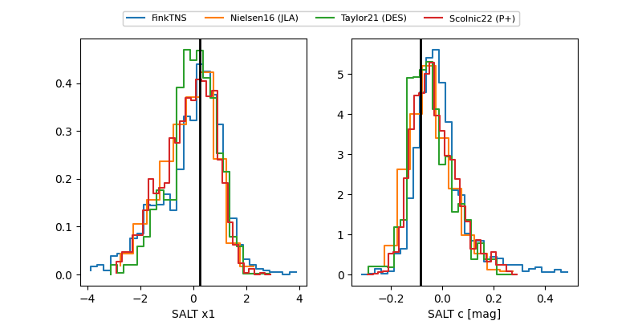

FINK: ZTF25abmhmbk
Lasair: ZTF25abmhmbk
ALeRCE: ZTF25abmhmbk
TNS: 2025vnx
YSE: 2025vnx
ZTF25abmhmbk (ztf,fink)
2025vnx (tns,yse)
ATLAS25lbo (atlas)
equatorial (ra, dec) = (289.6211,-25.28414)
galactic (l, b) = (12.6640,-16.82816)

last atlasc=17.43, atlaso=17.61, ztfg=18.17, ztfr=17.80
3 atlasc, 9 atlaso, 21 ztfg, 26 ztfr detections